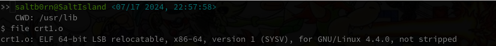

WASM实践
Table of Contents
在去年通过阅读 The Art Of WebAssembly 学习 WebAssembly (简称 WASM) 之后基本上再无使用过 WASM 了,
这本书算得上是一本不错的 WASM 入门书, 偏向 WASM 的底层, 但关于实际开发的内容很少.
这本书也有介绍到 Emscripten 这种使用的工具链, 我也尝试过这个工具, 不过这个工具用起来有一种很难受的感觉:
告诉你只需要那么做, 这么做就可以了, 把里面重要的细节都藏起来了.
这样会出现一个问题: Emscripten 就像是针对各种各样的问题提供了对应的解决方案, 只要你遇到了这些问题, 直接按照它提供的方案即可;
然而, 实际开发的问题远远不止这些, 要能够解决这些问题就得自己动手给出解决方案.
发现了这个真相后我就失望的中断了 WASM 的实践学习.
正如所有的计算机问题一样, 只要了解底层原理的人才有创造解决方案的能力.
这几天有幸逛到 Tsoding 老哥的 Easy Web Games in C 的视频, 视频内容就是在不依赖 Emscripten 的情况下把 raylib 程序移植到浏览器上;
他本人也是支持了解底层这个观点, 但同时也说了不是反对使用 Emscripten, 而是为了让自己拥有解决预想外问题的能力.
在看完他的视频后我重新燃起了探索的欲望, 因此, 这片文章是对 Tsoding 视频内容的整理以及拓展, 势必要在实际开发中掌握 WASM 的使用.
1. "Easy Web Games in C" 的内容总结
这里我本人跟练的项目, 和视频的会有些出入, 这是因为在跟练过程中冒出了一些想法.
视频内容分三部分:
前期小部分演示了如何使用 raylib 写一个 Linux 版本的例子;
中期部分演示了如何按照 raylib 官方文档的指示使用 Emscripten 编译链接 C 源文件(game.c)和 wasm 版 raylib 生成浏览器项目;
下半部分演示了用 clang 编译 game.c 得到 game.wasm, 但不让它和 raylib 进行连接,
然后使用 JavaScript 手动实现 game.c 所使用到的 raylib API, 提供给编译出来的 game.wasm 调用, 让项目最终运行起来.
这两种方法各有优劣:
使用 Emscripten 的优点是可以减少工作量,
缺点是需要对 game.c 进行改造成适用于浏览器的发布, 也就是说, 如果想让 game.c 发布到原生平台和浏览器, 那么你需要写两套代码;
另外一个缺点就是这个方式生成的 wasm 模块会相对较大, raylib 算是依赖较少的 C 库了, 实际开发中会有不少依赖复杂的库, 他们的 wasm 模块会异常大体积.
其实有办法可以在不写两套
C代码的情况下使用Emscripten生成项目.不过, 这就违背了
raylib文档中的 "Avoid raylibwhile(!WindowShouldClose())loop" 了,这是因为浏览器采用了协作式多任务(
co-operative multitasking)事件模型:每个事件都有有一个回合(turn, 我这里就采用回合制游戏名词作为翻译)用来执行, 在执行完后把控制权交换给浏览器, 浏览器再把控制权交给另外一个事件.
这就是为什么在浏览器里面执行死循环会导致浏览器卡住, 因为死循环并没有执行完毕这一动作, 因此也没有把控制权交还给浏览器.
而
while(!WindowShouldClose())编译成WASM后就是一个死循环.当然官方也意识到了开发者可能无法避免使用 "
while(!WindowShouldClose())loop", 因此给出了 ASYNCIFY 解决方案让代码以异步方式执行.
而第二种方法: 手动实现 raylib 的 API 提供给 game.wasm, 优点则是不依赖复杂的工具链 Emscripten, game.wasm 体积小, 无须写两套 game.c,
缺点就是工作量大, 必须手动通过 JavaScript 实现一切使用到的 raylib API 和 libc API.
这里引出一个思考: 什么要
JavaScript去实现API提供给WASM呢? 为什么不直接在C里面实现呢?其实要
JavaScript有两种场景.
Emscripten的GLFW API也是通过JavaScript实现的, 在浏览器上和绘制相关的问题基本上都是绕不开Canvas的,而
WASM是不能直接操作DOM的, 这部分功能 只能 在JavaScript进行封装, 并作为imports提供给WASM调用.所以在实际开发中, 要识别哪些功能是绕不开浏览器的, 这些功能就
JavaScript进行封装, 其他的尽量交给C来完成, 这就是第一种场景.另外一种场景是想要手动连接
WASM模块: 通过JavaScript实现WASM模块之间的依赖关系从而实现模块之间的连接.第二种方法相当于手动链接
game.wasm模块, 视频的例子是便于观众理解wasm在浏览器上从加载到连接再到调用一整套流程.视频里还特别演示了
game.wasm暴露的C函数的参数在JavaScript里面是怎么样的, 通过JavaScript实现这个函数要如何处理这些参数.
1.1. 视频中遇到的问题
1.1.1. clang 的 –target 选项
使用 clang 编译 WASM 时, 需要设置 --target 选项为符合产生 WASM 的值, --target 值需要符合一种叫做 target triple 的格式:
ARCHITECTURE-VENDOR-OPERATING_SYSTEM ARCHITECTURE-VENDOR-OPERATING_SYSTEM-ENVIRONMENT
参考源代码来讲:
ARCHITECTURE 的值是 <ArchType><SubArchType>, 其中 <SubArchType> 在 <ArchType> 满足某些值的情况下才有;
VERDOR 的值是 <VendorType>;
OPERATING_SYSTEM 的值是 <OSType>;
ENVIRONMENT 的值是 <EnvironmentType>.
<ENUM-NAME>是C/C++中枚举类型的定义.
视频中的 --target 是 wasm32, 相当于 wasm32-unknow-unknow;
由于我本人的代码中没有像视频中那样把 math.h 的 API 声明复制出来进行忽略, 而是使用 wasi-libc 进行连接(后面会提到),
所以我的 --target 是 wasm32-unknown-wasi, 目的是为了让 wasm-ld 方便的找到 wasi-libc 的头文件和库文件.
我的 Makefile 留了一个 --target=wasm32 的 Makefile rule 的注释, 该注释等同于 --target=wasm32-unknown-wasi 的 Makefile rule.
1.1.2. clang 编译优化会把没用上的 symbols 去掉
按照视频里面 Makefile,
game.wasm: game.c
clang --target=wasm32 -I./linux/include --no-standard-libraries -Wl,--no-entry -Wl,--allow-undefined -o game.wasm game.c
我们实际编译出来的 game.wasm 所对应的 wat 是这样的:
(module $game.wasm (table (;0;) 1 1 funcref) (memory (;0;) 2) (global $__stack_pointer (mut i32) (i32.const 66560)) (export "memory" (memory 0)))
视频里面编译出来的结果 大概 (本人没法保证完全一样)如下:
(module $game.wasm (type (;0;) (func (param i32 i32 i32))) (type (;1;) (func (result i32))) (type (;2;) (func)) (type (;3;) (func (param i32))) (type (;4;) (func (param i32 i32) (result i32))) (import "env" "InitWindow" (func $InitWindow (type 0))) (import "env" "WindowShouldClose" (func $WindowShouldClose (type 1))) (import "env" "BeginDrawing" (func $BeginDrawing (type 2))) (import "env" "ClearBackground" (func $ClearBackground (type 3))) (import "env" "EndDrawing" (func $EndDrawing (type 2))) (import "env" "CloseWindow" (func $CloseWindow (type 2))) (func $__original_main (type 1) (result i32) (local i32 i32 i32 i32 i32 i32 i32 i32 i32 i32 i32 i32 i32 i32 i32 i32 i32 i32 i32 i32 i32 i32) global.get $__stack_pointer local.set 0 i32.const 16 local.set 1 local.get 0 local.get 1 i32.sub local.set 2 local.get 2 global.set $__stack_pointer i32.const 0 local.set 3 local.get 2 local.get 3 i32.store offset=12 i32.const 800 local.set 4 i32.const 450 local.set 5 i32.const 1024 local.set 6 local.get 4 local.get 5 local.get 6 call $InitWindow block ;; label = @1 loop ;; label = @2 call $WindowShouldClose local.set 7 i32.const -1 local.set 8 local.get 7 local.get 8 i32.xor local.set 9 i32.const 1 local.set 10 local.get 9 local.get 10 i32.and local.set 11 local.get 11 i32.eqz br_if 1 (;@1;) call $BeginDrawing i32.const 230 local.set 12 local.get 2 local.get 12 i32.store8 offset=8 i32.const 41 local.set 13 local.get 2 local.get 13 i32.store8 offset=9 i32.const 55 local.set 14 local.get 2 local.get 14 i32.store8 offset=10 i32.const 255 local.set 15 local.get 2 local.get 15 i32.store8 offset=11 local.get 2 i32.load offset=8 align=1 local.set 16 local.get 2 local.get 16 i32.store offset=4 i32.const 4 local.set 17 local.get 2 local.get 17 i32.add local.set 18 local.get 18 call $ClearBackground call $EndDrawing br 0 (;@2;) end end call $CloseWindow i32.const 0 local.set 19 i32.const 16 local.set 20 local.get 2 local.get 20 i32.add local.set 21 local.get 21 global.set $__stack_pointer local.get 19 return) (func $main (type 4) (param i32 i32) (result i32) (local i32) call $__original_main local.set 2 local.get 2 return) (table (;0;) 1 1 funcref) (memory (;0;) 2) (global $__stack_pointer (mut i32) (i32.const 66592)) (export "memory" (memory 0)) (export "main" (func $main)) (data $.rodata (i32.const 1024) "Hello, from WebAssembly\00"))
而实际中 Makefile 要这么写才能和视频中得到差不多一样的结果:
game.wasm: game.c
clang --target=wasm32 -I./linux/include --no-standard-libraries -Wl,--no-entry -Wl,--allow-undefined -o game.wasm game.c -Wl,--export=main
原因不明, 可能是编译器的版本不一样, 视频中用的是 clang14, 本人用的是 clang18.
1.1.3. wasm-ld 的 –allow-undefined 选项
作用是告诉链接器保留未定义的符号(symbols)并不发出报错.
该选项在新版 wasm-ld 中已经是老选项了, 被 --unresolved-symbols=ignore-all 和 --import-undefined 等同了.
1.1.4. clang 的 -nostartfiles 选项的作用
因为 wasm-ld 使用了 --no-entry 选项, 所以 game.wasm 是没有入口(_start)的, 相当于 C 源代码没有 main 函数一样.
因此也不需要执行 main 函数前的初始化工作, -nostartfiles 选项就是告诉连接器不需要负责初始化工作的目标文件(比如下面会提到的 ctr1.o).
1.1.5. clang 的 –sysroot 选项的作用
用来设置编译链接时查找头文件/库文件的根目录, 在 Linux 上默认的更目录是 /usr, 从 /usr/lib 查找库, 从 /usr/include 查找头文件,
--sysroot=/tmp/wasi-libc 则会让编译器/连接器从 /tmp/wasi-libc/include 和 /tmp/wasi-libc/lib 中找文件.
之所以用这个选项是因为我的 game.c 使用了 libc 的函数, game.wasm 需要连接 WASM 的 libc, 这些文件并非位于系统定义的目录中.
/tmp/wasi-libc是需要自己手动安装的,git clone https://github.com/WebAssembly/wasi-libc cd wasi-libc make install INSTALL_DIR=/tmp/wasi-libc
1.1.6. wasm-ld: error: cannot open crt1.o: No such file or directory
原问题是出现在视频里面的(这里按照我的 Makefile 调整一下进行复现), Makefile 大概如下:
game.wasm: game.c clang \ -v \ --target=wasm32 \ --sysroot=/tmp/wasi-libc \ -Wl,--verbose \ -I./wasm/include \ -L./wasm/lib \ -I/tmp/wasi-libc/include/wasm32-wasi \ -L/tmp/wasi-libc/lib/wasm32-wasi \ -o $@ $^ \ '-l:libraylib.a' \ -lm
首先 crt1.o 用于可执行文件的连接, 负责可执行文件 main 函数在执行前的所有初始化工作.
问题在于连接器 wasm-ld 默认会在 sysroot 下的 lib 目录查找 crt1.o, wasi-libc 的 crt1.o 是位于 /tmp/wasi-libc/lib/wasm32-wasi 中.
解决这个问题有两个方法:
给
crt1.o建立一个软链接到sysroot的lib中:ln -sf /tmp/wasi-libc/lib/wasm32-wasi/crt1.o /tmp/wasi-libc/lib/crt1.o.- 把
--target设置为wasm32-unknown-wasi,wasm-ld便能准确定位到crt1.o.
1.2. 观后感
在看到视频里面 Tsoding 因为 raylib 依赖标准库里面的 math.h 让把 math.h 所有函数声明拷贝到 game.c 的时候,
我冒出了一个想法: 如何在不依赖 Emscripten 的情况下让 WASM 模块连接自己想要的库?
于是就以连接 C 标准库为目标进行检索, 一番折腾后才发现 WebAssembly System Interface (简称 WASI), 提供了各种可用于 WASM 编译链接的目标文件(动态库/静态库), 这些目标文件提供了适用于浏览器以及浏览器以外的运行时的 API.
在前面设置好的 sysroot 的 /tmp/wasi-libc/lib/wasm32-wasi 可以看到各种目标文件, 这些目标文件不是 ELF 文件, 而是和 game.wasm 一样都是 WebAssembly binary module.

Figure 1: 原生 libc 目标文件的文件类型

Figure 2: wasi-libc 目标文件的文件类型
随后又冒出了一个想法: 如何自己手动"造出"这种 WASM 库?
答案就是文章的后半部分了.
2. mini-wasm-lib workshop
这部分将会开发一个名为 mini-wasm-lib 的 WASM 库, 就像 raylib 一样能够发布原生版本和 WASM 版本的静态库:
来探讨如何把 C 库构建成 WASM 库.
作为例子, 这个库必须非常简单, 有 4 个源文件(lib{0,1,2,3}.c)和 1 个头文件(include/mini.h):
lib0.c提供函数int add(int, int)的实现int add(int a, int b) { return a + b; }
lib1.c提供函数int sub(int, int)的实现int sub(int a, int b) { return a - b; }
lib2.c提供函数int mul(int, int)的实现int mul(int a, int b) { return a * b; }
lib3.c提供函数float div(int, int)的实现float div(int a, int b) { return a * 1.0f / b; }
include/mini.h是提供这些函数声明的头文件#ifndef MINI_H #define MINI_H int add(int, int); int sub(int, int); int mul(int, int); float div(int, int); #endif
这个库会把 lib{0,1,2,3}.c 编译成 4 个目标文件 lib{0,1,2,3}.o, 使用 llvm-ar 把这些目标文件归成一个档: libmini.a.
这个档就是 mini-wasm-lib 发布的静态库文件了, 会发布两个版本: 原生和 WASM.
源代码很简单, 重点在于构建上, 所以 Makefile 才是重点:
.PHONY: clean CC := clang AR := llvm-ar OBJS := lib0.o lib1.o lib2.o lib3.o TARGET ?= NATIVE CFLAGS ?= LIB_ROOT := lib LIB_DIR ?= ifeq ($(TARGET), WASM) CFLAGS = --target=wasm32-unknown-wasi LIB_DIR = $(LIB_ROOT)/wasm else CFLAGS = LIB_DIR = $(LIB_ROOT)/native endif libmini.a: $(OBJS) mkdir -p $(LIB_DIR) $(AR) rcs $(LIB_DIR)/$@ $^ rm -rf $(OBJS) $(OBJS): %.o: %.c mkdir -p $(LIB_DIR) $(CC) $(CFLAGS) -c -o $@ $^ clean: rm -rf $(LIB_ROOT)
需要注意的是, 这里一整套工具连都是使用的
LLVM的, 非Unix/GNU.用
clang而不是cc/gcc;用
llvm-ar而不是ar;用
llvm-nm而不是nm;用
llvm-stripe而不是stripe;用
llvm-ranlib而不是ranlib.
构建原生静态库如下:
make
构建 WASM 静态库如下:
make TARGET=WASM
这就是不是用 Emscripten 构建 WASM 库的方法, 这个例子没有使用到任何第三方库,
如果要使用, 那么就得使用 WASI 或者自己按照制作该库的方法把第三方库编译成 WASM 库再进行连接.
WASI 的使用方法可以参考我的 easy-web-game-in-c 项目的 game.wasm 是如何连接 wasi-libc 的.